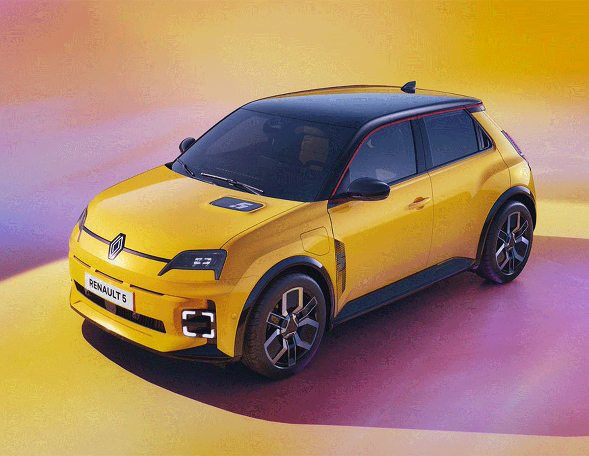

Architecture
Véhicule compact pensé autour d’une intégration cohérente de la chaîne de traction électrique, avec recherche d’optimisation du volume utile, de la compacité et de l’habitabilité.
La Renault 5 E-Tech réinterprète une silhouette emblématique de l’automobile française dans une logique contemporaine d’électrification. Cette fiche propose une lecture structurée du modèle à travers son identité, son architecture, son positionnement et ses principaux enjeux techniques.
La Renault 5 E-Tech reprend un nom historique fort pour l’inscrire dans une nouvelle phase de l’automobile européenne : celle d’une électrification plus accessible, plus désirable et plus lisible sur le plan industriel. Elle associe capital patrimonial, design évocateur et architecture moderne afin de proposer une citadine électrique à la fois identifiable, rationnelle et symboliquement forte.
Véhicule compact pensé autour d’une intégration cohérente de la chaîne de traction électrique, avec recherche d’optimisation du volume utile, de la compacité et de l’habitabilité.
Moteur électrique implanté à l’avant, associé à une batterie de traction logée dans la structure basse du véhicule afin d’abaisser le centre de gravité et de libérer l’espace habitable.
Modèle principalement pensé pour les trajets urbains et périurbains, tout en conservant un niveau de polyvalence permettant une utilisation quotidienne élargie.
Citadine électrique à forte valeur d’image, située à la rencontre du design affectif, de la rationalité d’usage et du renouvellement de gamme.
Travail de synthèse entre héritage stylistique, exigences de sécurité, contraintes d’industrialisation, connectivité et attentes contemporaines en matière d’ergonomie.
Réindustrialisation, électrification du segment B, relance de l’image Renault et adaptation à un marché de plus en plus concurrentiel sur les petites voitures électriques.

AvantLe design du modèle ne relève pas seulement de l’esthétique : il dialogue avec les contraintes aérodynamiques, industrielles et réglementaires. La Renault 5 E-Tech illustre la manière dont un héritage visuel peut être traduit en objet technique contemporain.
Cette fiche peut ensuite être enrichie par des données précises, des comparaisons et des analyses plus poussées.
La Renault 5 E-Tech se positionne face à d’autres citadines électriques comme la Peugeot e-208, la Fiat 500 électrique ou d’autres modèles du segment B électrifié. Elle se distingue par son approche néo-rétro, son potentiel d’image et sa fonction de modèle vitrine dans la stratégie récente de Renault.
Replacer le modèle dans l’histoire, la gamme et les orientations industrielles du constructeur.
Mettre en parallèle architecture, usage, design, segment, stratégie et compromis techniques.
Comprendre les logiques de conception qui structurent les véhicules électriques contemporains.
Développer la batterie, la gestion thermique, le packaging et l’intégration des systèmes embarqués.